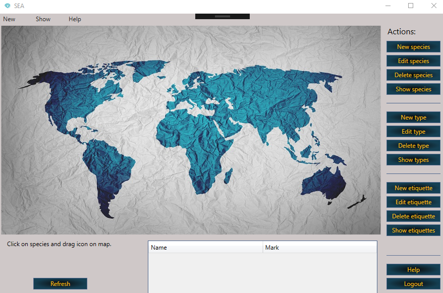
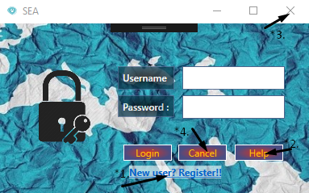

Save endangered animals is an application for keeping records of geographical distribution of endangered animals. It is possible to enter all necessary information about a particular species as well as direct manipulation of the species icon to a certain position on the map of the world. In order to access the application, it is necessary to log in to the user account or register. After succesfully login the application window opens.
Login - In order to access the application, its necessary to log in with user's account. If you don't have account you have to register, othervise you will need to enter username (* 1.) and password (* 2.) in the login window and then click the Login button (* 3.).
If the user has correctly written username and password after the click on the login button, the SEA application will open. After that user can start working. Otherwise, if the user has entered the correct username that already exists in the list of registered users but has a mistake while entering a password, a message will appear and inform that an error occurred while entering wrong password (* 1.). It is necessary to confirm the error information (* 2.) and re-enter the password.
If the user has made a mistake while entering the username, a message will appear that will indicate that a mistake occurred while entering username (* 1.). It is necessary to confirm the error information (* 2.) and re-enter the username and password.
If a user account doesn't exist, it is necessary to register a new user by clicking on the registration link (* 1.). At any moment it is possible to get the appropriate help (* 2.) and exit window (* 3. and * 4.).
Register - In order to access the application, it is first necessary to log in with the already created user account. If there is no user account click on the "New user? Register!" , registration window will be opened for registering new users. In order to add a new user, it is necessary to enter as much information as possible for easier information people about the user. The minimum number of information that needs to be entered is indicated by the (*) mark, which means that this information is required for registration of new user, other information is optional. After the correct data entry, you need to click on the registration button (* 7.). After that the user account is created and it is possible to log in to the application.
Each user is described with:
If a user name already exists in the database, the application will inform the user that the user already exists (* 1) when entering the data, and request re-entry of the user name.
While entering a password, you need to enter a minimum of 8 characters in order for the password to be valid. Otherwise, the application will report an error (* 1.).
It is necessary to re-enter the password for the prevention of possible errors while entering the password. If the user enters another password, the application will report a mistake (* 1.).
Help - help to use the site. The site displays the content (* 1.) that user can click to switch to a specific part of the text that is looking for. Site contains text and photos with detail explanation. It is necessary to read all the information. It is recomended to scroll the page from begining to end, in order to learn to use the application in the right way and get the requested information. At any time, it is possible to click F1 to get the help.